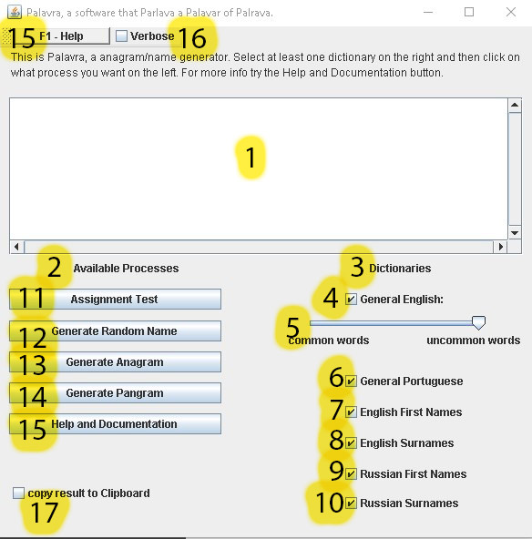

Welcome to the Documentation of Palavra
Click the links on the left to navigate in this document
You can download the zip with the executable Jar and the dictionaries for Palavra 1.0 here: Download
All the dicitonaries used where found online in the websites you have more information about them
The english dictionaries here: Combination of 10 big sites General Words and Males/Female Names
The russian dictionaries here: CRL Names and Given names
The portuguese dictionaries here: The one with 8mb from this page
What is Palavra?
An anagram/Pangram/Palidrome checker and generator
The idea behind palavra was only an College Assignment, that required a String inverser, splitter, palindrome and panagram checker.
But I want to do more, so I made a Graphic User Interface, and inputed some new functions, with plenty more to come, if I don't retire from this project.
The Name
Palavra means Word in portuguese, and besides that the anagrams for palavra give some very funny words in Portuguese and Italian, so the Slogan is: a software that Parlava (past tense of speak in Italian) a Palavar(A series of words that don't make much sense) of Palrava(words without much meaning). Last both are in Portuguese
How to use Palavra 1.0
This is the look of Palavra:
You need the last version of java to be installed in your machine to be able to use Palavra you can get a copy here:
This is what each part of Palavra does:

- 1. This is the Text Field where you are expected to input anything you want to test with the software, You can input as many words as you want, but too many words can be slow to process on old computers
- 2. This is the are where you will select the processes. You can select one at a time, but as many as you want before closing the application.
- 3. Those are the Dictionaries, with all Dictionaries Selected your computer will process 2.8 million words, using some tricks this is feasible even on older computers, but can take a while (8 seconds in a modern i7, 32 GB RAM, computer for example). The quality of the words vary great if you select too many dictionaries tough, as some of the dictionaries are full of typos, misspells and made up words.
- 4. The General English dictionary, this select if you want any english in the Software
- 5. This slide bar will select between 10 english dictionaries, as more to the left, you should expect less words, but all will be very common, to the right, there will be millions of words, most of them being typos, or made up words. This bar will have no use if the General English box is not ticked.
- 6. A very big dictionary of portuguese words
- 7. ~5000 United States First names
- 8. ~88000 United States Last Names
- 9. ~53000 CIS (Commonwealth of Independent States) names, this mean Ex-URSS
- 10. ~37000 CIS Last Names
- 11. This button expect a input of a phrase, or a word and an optional number and will run some tests giving back a result as follows:
The input was:
The quick brown fox jumps over a lazy dog 8
The Output:
The first line will tell if the input was a Pangram, if it wasn't this line will be omited
From now on, the output will show each word, and if it was a Palindrome, in this case, only a is detected as a Palindrome, for all words that have its position in the phrase as a multiple of the inputed number, the output will reverse it. if the input has more than 1 number, just the last one will be considered.
if the number was greater than the amount of words in the phrase the last line of the output will tell you. The output will ignore anything that is not a letter, a number or a -
- 12. This will use the dictionaries selected to generate the inputed number (between 1 and 9) of words, if no input is given it will generate 3 words.
- 13. This button will give back random anagrams of the whole phrase (not yet implemented)
- 14. This button will give back one famous Pangram, and on the future generate Pangrams from the user input
- 15. both the top button as the bottom one (or F1) will show this documentation in the user default browser
- 16. If this box is selected the program will give back some information about the time that the dictionaries took to be handled and the user input, this was used for debugging
- 17. If this box is selected the output of the software will be copied to the user Clipboard, (Control + C) you can use (Control+ v) to past it out.
The Design of Palavra
This diagram show the process of design the Assigment Test for Palavra
All the other methods follow the same basic principles
The Source code for Palavra
Java files
This will only been avaiable after Claire Authorization
The code for this documentataion website
Get it Here